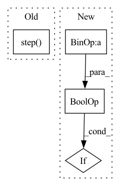

Pattern ID :36866
Before Change
self._step(action, selected_player)
def _step(self, action, player):
self.step( action, player)
self.record[-1] = [self.BLACK, self.WHITE][player], action
def diff_info(self, _):
if len(self.record) == 0:After Change
self.board[x, y] = selected_color
// check winning condition
if self.board[x, :].sum() == 3 * selected_color \
or self.board[:, y].sum() == 3 * selected_color \
or (x == y and np.diag(self.board, k=0).sum() == 3 * selected_color) \
or (x == 2 - y and np.diag(self.board[::-1, :], k=0).sum() == 3 * selected_color):
self.win_color = selected_color
In pattern: SUPERPATTERN
Frequency: 3
Non-data size: 4
Instances Fragment ID: 105003776
Project Name: dena/handyrl
Commit Name: 1dce83a00bbd21ff0a67fcb64ce25e5e59256b97
Time: 2021-03-04
Author: a.a.b.a.b.c.a.b.c.d.abcd1234@gmail.com
File Name: handyrl/envs/parallel_tictactoe.py
M Class Name: Environment
N Class Name: Environment
M Method Name: _step(3)
N Method Name: _step(3)
M Parent Class: TicTacToe
N Parent Class: TicTacToe
M File Name: handyrl/envs/parallel_tictactoe.py
N File Name: handyrl/envs/parallel_tictactoe.py
M Start Line: 27
M End Line: 28
N Start Line: 27
N End Line: 38
Before Change
grad_scaler.update()
if step_counter > postnet_start_steps:
grad_scaler_postflow.step( optimizer_postflow)
grad_scaler_postflow.update()
scheduler.step()
if step_counter > postnet_start_steps:After Change
optimizer.zero_grad()
optimizer_postflow.zero_grad()
if step_counter > postnet_start_steps and not torch.isnan(glow_loss) :
train_loss = train_loss + glow_loss
grad_scaler.scale(train_loss).backward() Fragment ID: 105003782
Project Name: digitalphonetics/ims-toucan
Commit Name: f602045d362a5da3119066ffc47b09771ed11b7e
Time: 2023-02-05
Author: lux.florian@gmail.com
File Name: TrainingInterfaces/Text_to_Spectrogram/PortaSpeech/portaspeech_train_loop.py
M Class Name: AnonimousClass
N Class Name: AnonimousClass
M Method Name: train_loop(16)
N Method Name: train_loop(16)
M Parent Class:
N Parent Class:
M File Name: TrainingInterfaces/Text_to_Spectrogram/PortaSpeech/portaspeech_train_loop.py
N File Name: TrainingInterfaces/Text_to_Spectrogram/PortaSpeech/portaspeech_train_loop.py
M Start Line: 88
M End Line: 232
N Start Line: 88
N End Line: 219
Before Change
actor_critic.actor.optimizer.zero_grad()
actor_loss.backward()
actor_critic.actor.optimizer.step()
actor_output_after = actor_critic.actor(input)
critic_output_after = actor_critic.critic(input)
After Change
actor=actor, critic=critic, share_encoder=share_encoder, share_torso=share_torso
)
if not share_encoder and not share_torso :
assert actor_critic.actor and actor_critic.critic
else: Fragment ID: 105003784
Project Name: londonnode/pearl
Commit Name: 154b68d1925a7b73086da8bc3e861d06bf841027
Time: 2021-09-13
Author: rohan.tangri@gmail.com
File Name: tests/test_models.py
M Class Name: AnonimousClass
N Class Name: AnonimousClass
M Method Name: test_actor_critic_shared_arch(3)
N Method Name: test_actor_critic_shared_arch(3)
M Parent Class:
N Parent Class:
M File Name: tests/test_models.py
N File Name: tests/test_models.py
M Start Line: 109
M End Line: 142
N Start Line: 123
N End Line: 127